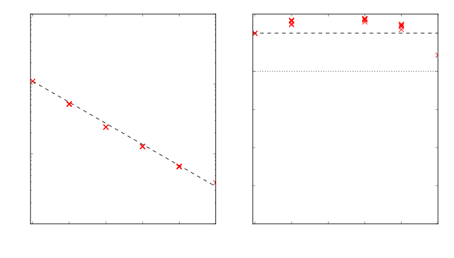
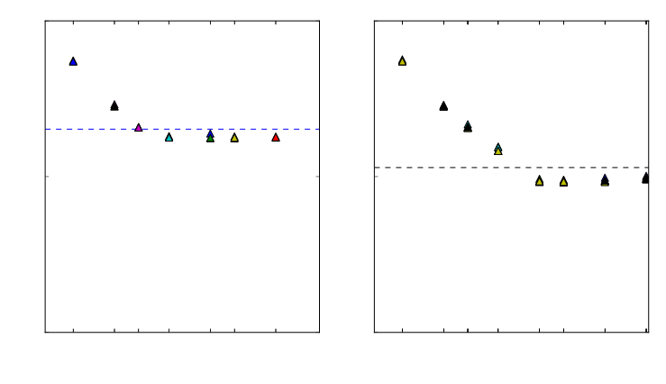
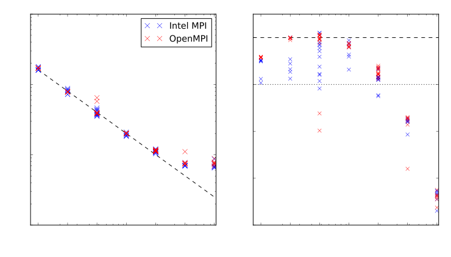

ACCESS Optimization: Oceans
Marshall Ward
National Computational Infrastructure
0.25° Global MOM-SIS Model

- Finite difference PDE (mostly)
- Orthogonal curvilinear grids
- 1440 x 1080 x 50 grid points
- 480 ocean steps (10 days)
- Per ocean step:
- 72 dynamic sea ice steps
- 1 advective sea ice step
- Halo exchange parallelisation
Main loop scaling

Initialization "scaling"
0.1° Modelling
3600 x 2700 x 50 grid points
0.1° Scaling
(More results incoming...)
Scaling prehistory
- MPI Preconnection
- MXM/FCA acceleration
- Partially committed nodes
- Disabling OpenIB (!)
- Hyperthreading
- Hangs beyond 1920 CPUs
Major fixes
- Flux exchange initalization
- Global field manipulation
Flux Exchange

- Coupler reports fractional overlap to every ocean tile
- Previously used
MPI_Isend; failed at 2000 CPUs - Replaced with
MPI_Alltoall; scales to >20k CPUs
Global field gather/scatters
- Non-contiguous, cannot use
MPI_Gather/Scatter - Was implemented using
MPI_Isend - Used in SIS, fails at 15k CPUs, but the call was unneeded!
Submodel scaling (0.25°)

MOM-SIS Concurrency
Concurrency scaling
1-year simulations
| PEs | Runtime | CPU Hrs | yr/day |
|---|---|---|---|
| 960s | 7364.9 | 1966.1 | 11.7 |
| 1920s | 3986.8 | 2126.3* | 21.7 |
| 2240c | 3347.5 | 2112.4 | 25.8 |
| 3840s | 2504.3 | 2776.5 | 34.5 |
| 4480c | 1919.6 | 2510.0 | 45.0 |
Exceeded the 40 yr/day performance target
Intel MPI vs. Open MPI
Software Stack
- Intel Compilers: 15.0.3.187
- Open MPI 1.8.8
- Intel MPI 5.1.0.079
Intel MPI vs. Open MPI
Intel MPI vs Open MPI
| 120 | 240 | 480 | 960 | 1920 | 3840 | 7680 | |||||||
| Intel | OMPI | Intel | OMPI | Intel | OMPI | Intel | OMPI | Intel | OMPI | Intel | OMPI | Intel | OMPI |
| 1601.6 1603.1 1605.4 1609.9 1612.1 1759.1 1795.2 | 1698.8 1700.4 1702.4 1703.5 1704.2 1704.5 1709.3 | 724.2 724.8 798.1 814.5 837.4 848.3 878.0 | 779.9 780.1 780.8 781.6 781.7 782.3 788.2 | 354.8 355.3 358.9 369.1 372.8 374.4 379.1 384.5 394.3 413.4 428.6 430.7 444.6 462.6 | 384.7 385.6 386.1 386.2 386.4 387.1 391.0 392.1 392.9 393.2 393.4 398.7 576.5 646.7 | 183.2 185.3 186.5 188.9 195.2 197.0 209.7 | 199.8 199.9 200.4 202.1 202.9 203.2 203.4 | 104.4 104.5 108.7 108.7 108.8 109.1 109.2 109.2 109.4 110.0 110.3 110.5 120.1 120.6 | 110.8 111.6 111.9 112.0 112.7 113.1 114.8 115.1 115.6 115.7 115.7 115.7 117.2 118.4 | 69.1 69.6 70.0 70.4 70.4 70.8 77.2 | 73.8 74.1 74.5 74.6 75.6 77.5 110.7 | 65.4 65.5 66.9 68.0 69.3 72.8 86.8 | 69.6 74.0 74.8 75.4 76.6 78.7 88.6 |
ACCESS-CM Climate Model
- Coupled climate model, three components:
- Atmosphere: UM (v8.5 -> 10.2)
- Ocean: MOM v5.1
- Sea Ice: CICE v5.1
- Grid resolutions
- Atmosphere: 193 x 144 (~1°)
- Ocean: 1440 x 1080 (~0.25°)
- OASIS-MCT coupler
Anomalous hanging
- Problem
- Runtimes would vary between 2 and 5 hours (or longer)
- Resolution
- Enable buffered IO (c/o Nicholas Hannah, UNSW)
--assume buffered_io
Runtime variability
... but CICE runtime still showed variability
Elastoviscoplastic solver
Acutely in the elastoviscoplastic solver
Concurrent IO
- Out-of-bound heat flux warnings
- ACCESS directed errors to single file
- Many GB of warnings per year (?)
- Still not clear if intentional (?)
Resolved by using one logfile per rank
MOM OASIS model hang
- Every rank was constructing global coupler restart fields
- $N^2$ messages overwhelm Raijin
- Only Rank 0 was doing IO anyway!
call mpp_global_field(Ocean_sfc%domain, &
vtmp(iisc:iiec,jjsc:jjec), gtmp, &
flags=ROOT_GLOBAL)
Now only rank 0 constructs coupler restart fields
ACCESS-CM TODO
- CICE EVP load imbalance
- OASIS performance?
- CICE CPU reduction
WaveWatch 3
Surface wave model used at NOAA/NWS
- Wave propagation in slow varying dispersive medium
- Combined spectral and spatial timesteps
- 1440 x 625 (0.25°) spatial grid
- Open source, but needs registration
WW3 main loop
WW3 main loop: Spectral bin gathering
WW3 main loop: Spectral partitioning
WW3 main loop: Spatial propagation
WW3 main loop: Source terms
WW3 main loop: Spectral propagation
WW3 main loop: Spectral bin scattering
WW3 main loop: Mean parameter calculation

WW3 initialization
WW3 Restart IO
Used in initialization and main loop
WW3 MPI-IO Progress
| IO Type | Time (s) |
|---|---|
| Single-rank | 2830.46 |
| Concurrent POSIX | 1745.73 |
| Disabled | 1395.13 |
| MPI-IO | 1395.16 |